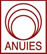

Descripción del Programa
La Licenciatura en Teología forma profesionales para enfrentar los escenarios desafiantes de la sociedad actual, desarrolla en el estudiante competencias personales y profesionales que lo capacitan para: Ejercer liderazgo en proyectos de investigación, innovación y de servicio, interpretar en forma responsable el texto bíblico, predicar y enseñar la Palabra de Dios a partir de una metodología que contribuya a enriquecer la vida espiritual de la iglesia. Instruir y ministrar a la iglesia en todas las áreas de su funcionamiento y desarrollo para la evangelización con una visión mundial.
Perfil de Ingreso
El alumno que aspire a ser estudiante de esta carrera deberá tener las siguientes características:
- Ser una persona de elevados principios morales y espirituales, y tener una buena conducta.
- Ser una persona que tenga altos ideales de Servicio a Dios y a sus semejantes.
- Tener buen juicio, equilibrio emocional y una buena salud física
- Disponer de los conocimientos bíblicos básicos
- Gozar de una experiencia religiosa
- Haberse destacado como líder en su congregación local y contar con las recomendaciones de la misma.
- Demostrar sentido de responsabilidad, honestidad, disciplina, dedicación al estudio y disposición indivisa a las actividades devocionales y misioneras.
Competencias a desarrollar
- Emprender iniciativas para vivir y difundir una cosmovisión de acuerdo con la perspectiva bíblica.
- Proyectar una vida profesional, personal y familiar en el marco de un compromiso moral y misional.
- Organizar y planificar sus recursos personales (tiempo, finanzas, habilidades, salud) en el marco de la administración responsable.
- Tomar iniciativas para la preservación del medio ambiente y la sustentabilidad
- Tomar iniciativas que promuevan el servicio abnegado que atienda las necesidades de los demás.
- Desarrollar la capacidad creativa para analizar los procesos y las formas en que se realizan las tareas y crear escenarios más eficientes y efectivos
- Apreciar la belleza en las manifestaciones artísticas y culturales en el marco de la cosmovisión bíblica.
- Desarrollar proyectos de investigación para resolver los problemas relacionados con su desarrollo profesional
- Comunicarse en forma oral y escrita en español y en un según idioma
- Mantener buenas relaciones interpersonales. Valorar y respetar la diversidad y multiculturalidad
- Realizar trabajo en equipo en un contexto de apertura a las opiniones de los demás, pero manteniendo sus convicciones personales.
- Interpretar en forma responsable el texto bíblico a partir del dominio de las herramientas lingüísticas e históricas.
- Desarrollar un liderazgo en el estilo de vida en armonía con las convicciones que resultan del texto bíblico.
- Predicar y enseñar la Palabra de Dios a partir de una metodología que contribuya a enriquecer la vida espiritual de la iglesia.
- Instruir a los miembros de la iglesia en las doctrinas bíblicas para que sean capaces de establecer un diálogo inteligente con personas de otras confesiones religiosas, que le lleve a evaluar críticamente sus creencias y las propias.
- Ministrar de manera empática, ética y confidencial a los miembros de la comunidad en las diversas problemáticas que afrontan.
- Capacitar y administrar a la iglesia en todas las áreas de su funcionamiento y desarrollo para la evangelización con una visión mundial, al mismo tiempo que con responsabilidad local.
Plan de Estudio
| 1er. Semestre | |
|---|---|
| Materia | Creditos |
| Introducción a la Evangelización | 4 |
| Arqueología del Antiguo cercano oriente. | 4 |
| Historia Antigua | 4 |
| Canon Bíblico | 4 |
| Formación del Carácter | 6 |
| Taller de Enseñanza | 3 |
| Comunicación Oral y Escrita | 6 |
| Estilo de Vida Saludable | 4 |
| Aptitud Física I: Atención a la Salud | 1 |
| Apreciación Cultural I: Arte | 1 |
| Educación para el Servicio: Agricultura y Ecología | 3 |
| TOTALES | 40 |
| 2° Semestre | |
|---|---|
| Materia | Creditos |
| Principios de Administración | 4 |
| Taller de Evangelización | 4 |
| Griego I | 6 |
| Análisis de los sinópticos | 6 |
| Pentateuco | 4 |
| Teología Fundamental | 6 |
| Introducción a la Investigación | 4 |
| Aptitud Física: Salud Física | 1 |
| Apreciación Cultural: Música | 1 |
| Educación para el Servicio: Mant. del Hogar | 3 |
| Portafolio de Aprendizaje I | 1 |
| TOTALES | 17 |
| 3er. Semestre | |
|---|---|
| Materia | Creditos |
| Liderazgo | 4 |
| Evangelismo Intercultural | 5 |
| Seminario de Evangelización | 6 |
| Griego II | 6 |
| Libros Históricos | 4 |
| Cristología y Soteriología | 6 |
| Relaciones Familiares | 4 |
| Aptitud Física: Educación Física | 1 |
| Apreciación Cultural: Pintura | 1 |
| Educación para el Servicio: Industria | 3 |
| TOTALES | 17 |
| 4°Semestre | |
|---|---|
| Materia | Creditos |
| Evangelización y Medios | 6 |
| Hebreo I | 4 |
| Principios de Hermenéutica | 6 |
| Libros Poéticos | 6 |
| Pensamiento Teológico y Vida Religiosa | 6 |
| Métodos de Investigación | 5 |
| Práctica de Liderazgo | 1 |
| Aptitud Física: Cuidado del Cuerpo | 1 |
| Apreciación Cultural: Obras Literarias | 1 |
| Educación para el Servicio: Emprendimientos | 3 |
| Portafolio de Aprendizaje II | 1 |
| TOTALES | 16 |
| 5° Semestre | |
|---|---|
| Materia | Creditos |
| Organización Eclesiástica | 4 |
| Hebreo II | 4 |
| Profetas del Antiguo Testamento | 6 |
| Pensamiento Teológico Protestante | 4 |
| Pensamiento Teológico Católico | 4 |
| Homilética | 6 |
| Historia del Cristianismo Temprano y Medieval | 6 |
| Práctica Profesional I | 1 |
| Aptitud Física: Acondicionamiento Físico | 1 |
| Expresión Cultural: Producción Artística | 1 |
| Servicio Comunitario: Visión Profesional | 3 |
| TOTALES | 40 |
| 6° Semestre | |
|---|---|
| Materia | Creditos |
| Legislación Eclesiástica | 5 |
| Herramientas para el uso de los Idiomas Antiguos | 6 |
| Literatura apocalíptica del Antiguo Testamento | 4 |
| Taller de Homilética | 6 |
| Historia del Cristianismo posmedieval | 6 |
| Ministerio de Salud | 6 |
| Práctica Profesional II | 1 |
| Aptitud Física: Rendimiento físico | 1 |
| Expresión Cultural: Diseños y Formas | 1 |
| Servicio Comunitario: Ejecución de proyectos | 3 |
| Portafolio de Aprendizaje III | 1 |
| TOTALES | 40 |
| 7° Semestre | |
|---|---|
| Materia | Creditos |
| Administración Eclesiástica | 6 |
| Dilemas Éticos Contemporáneos | 4 |
| Literatura Apocalíptica del nuevo Testamento | 6 |
| Estudio de escritos Paulinos | 6 |
| Ciencia y Religión | 4 |
| Historia Eclesiástica | 4 |
| Publicaciones y Evangelización | 4 |
| Trabajo de Investigación | 6 |
| TOTALES | 40 |
| 8° Semestre | |
|---|---|
| Materia | Creditos |
| Análisis de documentos eclesiásticos | 6 |
| Hechos y cartas generales | 6 |
| Técnica de Consejería | 4 |
| Tópicos contemporáneos en Teología | 6 |
| Análisis de Liturgia | 6 |
| Escritos de Elena G. de White | 6 |
| Sistema de Educación confesional | 1 |
| Práctica Profesional III | 1 |
| TOTALES | 1 |
Duración del programa
Cinco años, siguiendo la programación sugerente. La modalidad es flexible, se ajusta a tu disponibilidad de tiempo, en este caso la duración del programa depende de cada estudiante.
Acreditaciones y Afiliaciones
Federación de Instituciones Mexicanas Particulares de Educación Superior, A.C.

Asociación Acreditadora Adventista
Secretaria de Educación Pública
Recursos que favorecen el aprendizaje
Sistema de gestión de aprendizaje en entorno virtuales
La Plataforma e42 permite:
- Organizar materiales y actividades de formación en cursos
- Hacer seguimiento del proceso de aprendizaje de cada estudiante
- Evaluar las experiencias de aprendizaje
- Comunicación sincrónica a través de sesiones virtuales
- Comunicación asincrónica mediante foros de discusión, chat o correo electrónico

Acceso a la Biblioteca Virtual UM
La Biblioteca Virtual UM ofrece los siguientes recursos bibliográficos:

ProQuest Dissertations & Theses Database: Es la colección más completa del mundo de disertaciones y tesis. El archivo oficial tesis digitales de la Biblioteca del Congreso y de la base de datos de registro para la investigación de posgrado. En texto completo incluye casi 3 millones de citas de búsqueda para tesis y disertaciones de todo el mundo.
EBSCO: Servicio de información con acceso a 12 bases de datos en inglés y español. En este grupo se destaca Academic Search Premier como la más completa y multidisciplinaria. Registros abundantes en idioma español en Fuente Académica y Mediclatina y una colección de e-books de temas varados.
ATLA Religion Database: Colección de más de 100 revistas seleccionadas por estudiosos
de religión y teología.

The Ellen G. White Estate, Inc: Las obras completas de publicación de la Sra. White están disponibles ahora en línea. En este sitio podrá fácilmente buscar, leer y marcar como favoritos los escritos de Ellena G. White
Redalic: Sistema Open-Access de la Red de Revistas Científicas de América Latina y el Caribe,
España y Portugal, impulsado por la Universidad Autónoma del Estado de México (UAEM).
Presenta resultados temáticos y por países de las revistas indexadas.

Britannica Universal: Obra de referencia en español con más de 250,000 artículos que incluye multimedia. Está enfocada a estudiantes de todas las áreas académicas de nivel medio y superior, así como al público interesado por la cultura y los conocimientos generales.
Servicios de referencia virtual
Los estudiantes pueden consultar directamente por email o a través de la plataforma e42 a un referencista virtual. Los servicios de referencia virtual (NOÉ en español y NOAH en inglés) se ofrecen a través de Question Point.
Personal especializado
Docentes expertos en el área de estudio Equipo de expertos en el diseño y tutoría de cursos en línea
Requisitos de Admisión
El trámite de admisión a la Universidad, se hace en línea, para acceder al sistema ingrese desde la página principal de este sitio en el botón “Admisión”.
Al ser admitido como alumno, le enviaremos su carta de aceptación con su número de matrícula asignado y deberá enviar los documentos ORIGINALES por mensajería.
El trámite de su admisión a la Universidad, requiere de la revisión de su EXPEDIENTE COMPLETO con su documentación escaneada. Expedientes incompletos no proceden para trámite.
Documentos solicitados para alumnos mexicanos
- Solicitud de admisión debidamente completada y FIRMADA en la parte denominada "Compromiso del alumno y/o el padre o tutor". (*)
- Acta de nacimiento
- Certificado de preparatoria/bachillerato legalizado
- Copia de CURP
- Tres (3) cartas de recomendación (*)
- 6 Fotografías en blanco y negro tamaño credencial (35 mm x 45 mm) con ropa formal, no instantáneas y con su nombre en la parte del reverso
(*) Los formatos de cartas de recomendación y solicitud de admisión las obtiene ingresando al sistema de Admisión. Las cartas de recomendación deben ser enviadas directamente por la persona que la contestó, a través del sistema de admisión, por correo electrónico a la siguiente dirección: ead@um.edu.mx o por fax al número: (826) 26 3 28 10.
Documentos solicitados alumnos extranjeros
- Solicitud de admisión debidamente completada y FIRMADA en la parte denominada "Compromiso del alumno y/o el padre o tutor".
- Acta de nacimiento (Legalizada/apostillada)
- Certificado de estudios de preparatoria/transcripción de créditos desglosadas por grados (apostillado)
- Diploma de terminación de estudios de bachillerato (apostillado)
- Tres (3) cartas de recomendación
- 6 Fotografías en blanco y negro tamaño credencial (35 mm x 45 mm) con ropa formal, no instantáneas y con su nombre en la parte de reverso
- 1 crédito
- 4 créditos
- 6 créditos
- $1,135.00
- $4,540.00
- $6,810.00
- $1,419.00
- $5,676.00
- $8,514.00
- Realizar el pago por internet utilizando la clave interbancaria de Scotiabank: 044597253000003611 (esta cuenta es concentradora, por lo tanto, debes poner tu referencia, la cual encuentras accesando a tu cuenta en el sistema académico) -Depósito bancario:
- Sería tal como está en tu portal, el número de cuenta y la referencia que allí encuentras, y con esos datos haces la consignación. Banorte
- Clave para realizar el pago por internet: 072597000610151165 -Depósito bancario:
- Clave para transacciones bancarias: 0061015116
- El pago de forma electrónica lo puedes realizar a través de la página de la Universidad: www.um.edu.mx dando click en la opción “DESARROLLO” y ahí en la opción “Pagos y Donaciones en línea”. Es necesario que tengas a la mano tu tarjeta de crédito para realizar el pago y llenar todos los datos que se te requieren. La cantidad que vas a escribir es en PESOS MEXICANOS. Por favor, toma en cuenta, que el sistema tarda a veces hasta 5 minutos o más en dar respuesta. No intentes realizar la operación de nuevo, hasta que el sistema te responda si tu operación ha sido ACEPTADA o DENEGADA, ya que podría hacerle el cargo a tu tarjeta por más de una vez. Aún y cuando realices la operación y no te de ninguna respuesta, solo avísame para que verifiquemos en nuestro sistema contable. No marques a los números que indica la página de pago electrónico, únicamente ponte en contacto con nosotros para confirmar si tu transferencia aparece en nuestro sistema.
- Depósito bancario con los siguientes datos:
UNIVERSIDAD DE MONTEMORELOS [CUENTA BANCARIA INTERNACIONAL]
Banco: Banamex USA Cuenta: 5802282901
A nombre de: Universidad de Montemorelos Clave de Transferencia SWIFT: CALCUS6LXXX
Dirección: 2029 Century Park East Piso 42, Los Angeles, California 90067 Tel: 1 800 222 1234
NOTA: Enviar copia de depósito al correo umvirtual@um.edu.mx - El pago puedes realizarlo de forma electrónica por medio de la página de la Universidad: www.um.edu.mx click en la opción “DESARROLLO” y ahí en la opción “Pagos y Donaciones en línea”. Es necesario que tengas a la mano tu tarjeta de crédito para realizar el pago y llenar todos los datos que se te requieren. La cantidad que vas a escribir es en PESOS MEXICANOS. Por favor, toma en cuenta, que el sistema tarda a veces hasta 5 minutos o más en dar respuesta. No intentes realizar la operación de nuevo, hasta que el sistema te responda si tu operación ha sido ACEPTADA o DENEGADA, ya que podría hacerle el cargo a tu tarjeta por más de una vez. Aún y cuando realices la operación y no te de ninguna respuesta, solo avísame para que verifiquemos en nuestro sistema contable. No marques a los números que indica la página de pago electrónico, únicamente ponte en contacto con nosotros para confirmar si tu transferencia aparece en nuestro sistema. NOTA: En Cliente debes colocar tu nombre completo.
- Depósito bancario con los siguientes datos:
UNIVERSIDAD DE MONTEMORELOS [CUENTA BANCARIA INTERNACIONAL]
Banco: Banamex USA Cuenta: 5802282901
A nombre de: Universidad de Montemorelos Clave de Transferencia SWIFT: CALCUS6LXXX
Dirección: 2029 Century Park East Piso 42, Los Angeles, California 90067 Tel: 1 800 222 1234
NOTA: Enviar copia de depósito al correo umvirtual@um.edu.mx - De Agosto 21 a Enero 22 - Admisiones.
- 5 de Diciembre - Último día de recepción de documentos.
- Del 5 de Diciembre al 19 de Enero - Pagos, depósitos y transferencias
- Del 5 al 22 de Enero – Inscripciones
- 3 de Febrero – Activación de inicio de materias
(*) Los formatos de cartas de recomendación y solicitud de admisión las obtiene ingresando al sistema de Admisión.
Documentos académicos y acta de nacimiento en otro idioma, deben ser traducidos al español y legalizados en el consulado mexicano en su país.
El GED no es aceptado para realizar estudios en la Universidad de Montemorelos.
Costos y formas de pago
Formas de pago
-
Scotiabank
- Pago electrónico:
Importante: Si usan esta de cuenta, deben hacernos llegar la ficha, si no, no será registrada en la cuenta de nadie -Pago eletrónico:
Datos cuenta bancaria internacional para estudiantes que viven en USA
Cuentas con dos opciones para hacer tu pago:
Datos pago electrónico y/o cuenta bancaria internacional para estudiantes que viven en un país diferente de USA y México.
Cuentas con dos opciones para hacer tu pago:
Los pagos se realizan una vez que ha sido aceptado como alumno. Los pagos en moneda extranjera están sujetos a cambios en base a la cotización del dólar.
Calendario
Fechas importantes para el ingreso al semestre de Agosto - Enero del 2015: